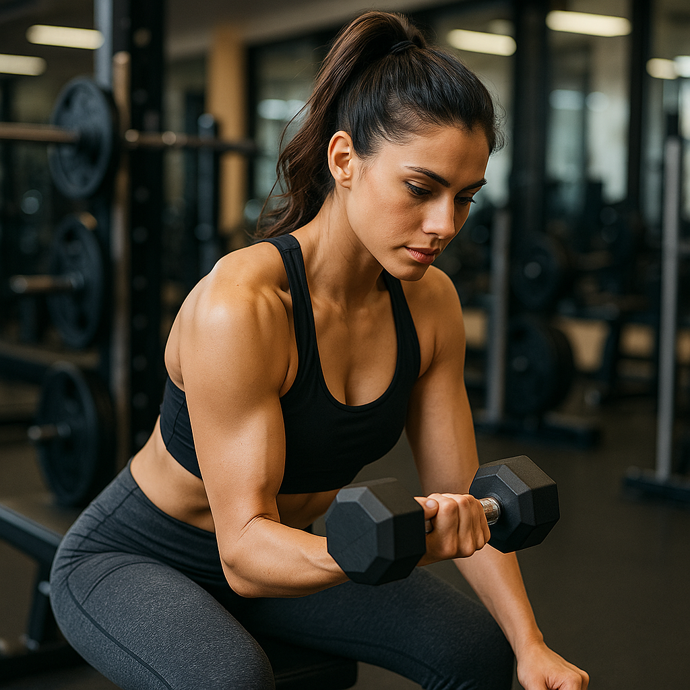

EM DESTAQUE


Conteúdos Importantes
Treine seu corpo em casa
3 exercícios de abdomen.
Exercícios para Iniciantes
Veja uma rotina de exercícios simples e eficazes para começar agora.
Como emagrecer correndo na esteira
Facilidades para quem está acima do peso.
Como manter o foco na vida fitness
Manter o foco na vida fitness vai muito além de apenas treinar. É sobre disciplina, constância e pequenas escolhas diárias que constroem grandes resultados. Defina metas reais e mensuráveis, celebre cada conquista, por menor que pareça, e lembre-se de que resultados duradouros vêm com o tempo. Encontre uma rotina que você goste - seja musculação, corrida, dança ou funcional - e mantenha-se ativo(a) de forma prazerosa. Cuide também da alimentação, pois ela é tão importante quanto o treino. E, acima de tudo, tenha paciência com o seu processo: a consistência vence a motivação passageira. Seu corpo é reflexo do que você faz repetidamente. Faça de cada dia uma oportunidade para se superar!
Curiosidades
- Treino de força acelera o metabolismo: mesmo depois de terminar o treino, seu corpo continua gastando energia para reparar os músculos, o que ajuda a queimar mais calorias ao longo do dia.
- Agachamento trabalha muito mais do que só as pernas: ele também ativa abdômen, costas e até músculos dos ombros, ajudando na postura e no equilíbrio.
- Músculo pesa mais que gordura: na verdade, 1 kg é 1 kg, mas o músculo é mais denso, ocupando menos espaço que a gordura. Por isso, é possível pesar o mesmo, mas parecer mais magro(a).
- Descanso é parte do treino: é no descanso (sono e pausas entre treinos) que o músculo se recupera e cresce, não durante o exercício.
- Treinar em jejum não é “milagre” para emagrecer: o que importa para perder gordura é o déficit calórico no longo prazo, não apenas o horário da refeição.